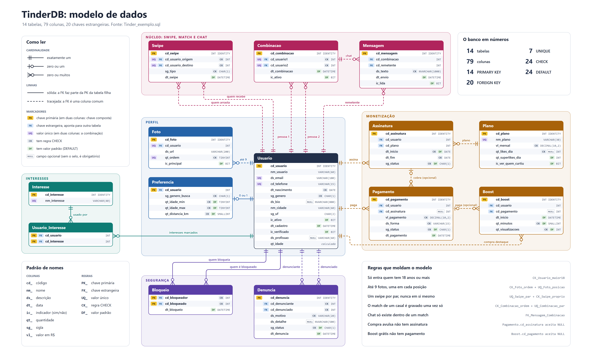

Resumo de estudos: defesa do Desafio P2
Banco TinderDB · SQL Server · defesa na segunda, 16/11/2026 · trio
Este resumo junta o regulamento, a matéria das cinco aulas e o script do TinderDB em um só lugar, para estudar e ensaiar a defesa. O Roteiro diz quando estudar cada parte, e o Questionário testa se ficou. As referências do tipo "Aula 05, slide 12" apontam para os slides do professor, e "5.3" ou "seção 6.2" apontam para o Tinder_exemplo.sql.
Como usarSe só der tempo de ler uma coisa, leia as seções 1 a 3. Os resultados citados foram calculados para 16/11/2026 em uma simulação (SQLite) e conferidos no SQL Server 2022 Express. Mesmo assim, rode tudo uma vez no seu SSMS antes da defesa.
1. O desafio em 1 minuto
- O que é. O desafio "Por trás dos dados": cada equipe, de até 3 pessoas, recebeu por sorteio uma plataforma real e implementou, em SQL Server, um banco relacional inspirado nela. A nossa é o Tinder.
- Quanto vale. Até 8,0 pontos, e substitui a P2. Quem faz o desafio e também a P2 perde as duas notas (§8).
- Como é a defesa. Direto no SQL Server: explicar a plataforma, apresentar as tabelas e os relacionamentos, executar os scripts de criação e manipulação, demonstrar consultas, executar transações e explicar as decisões técnicas (§6).
- Desafio ao vivo. O professor pode pedir uma consulta nova ou alterada, uma operação, ou fazer perguntas técnicas. Todos os integrantes participam e respondem (§6 e §7, item 9).
- O que não se exige. Diagramas, interface ou aplicativo (§5 e §7, item 8). O foco é o SQL.
- Prazo. A entrega e a apresentação acontecem na última aula antes da semana de provas. O envio dos scripts segue as orientações do professor (§9).
AtençãoO regulamento pede seis scripts (criação, alteração, população, manipulação, consulta e transações) mais a demonstração (§5). Hoje o projeto está em um arquivo único, com sete seções. Confirmem com o professor como enviar. Separar o arquivo é simples e está descrito na seção 13.
2. O que o professor avalia
Cada linha liga um item do regulamento ao ponto do TinderDB que o atende e a uma frase pronta para falar.
| Item do regulamento |
O que ele quer ver |
Onde está no TinderDB |
Frase pronta |
| §3 Escopo |
Vários processos da plataforma, não uma função isolada |
14 tabelas em 5 áreas: perfil, interesses, núcleo (swipe, match e chat), monetização e segurança |
"O banco cobre o ciclo completo do app: cadastro, descoberta, swipe, match, conversa, assinatura e moderação." |
| §4.1 Criação |
CREATE DATABASE, CREATE TABLE, tipos, PK, FK, NOT NULL, UNIQUE, CHECK, DEFAULT |
Seção 1, com 89 regras: 14 PK, 20 FK, 7 UNIQUE, 24 CHECK e 24 DEFAULT |
"Todas as regras têm nome (PK_, FK_, UQ_, CK_, DF_), então o erro diz qual regra barrou." |
| §4.1 Alteração |
ALTER TABLE |
Seção 2, com 5 alterações: 2 colunas novas, 1 ALTER COLUMN, 1 coluna calculada e 1 CHECK novo |
"A idade é uma coluna calculada: nunca fica desatualizada." |
| §4.2 Manipulação |
INSERT, UPDATE, DELETE que representem situações reais, com dados fictícios |
Seções 3 e 4: cadastro, edição de perfil, expiração de assinatura, banimento, "voltar" e unmatch |
"Cada comando representa algo que acontece no app." |
| §4.3 Consultas |
SELECT, WHERE, ORDER BY, JOIN, várias tabelas, COUNT, SUM, AVG, GROUP BY; perguntas reais |
Seção 5, com 13 consultas |
"Cada consulta responde uma pergunta do app: a pilha de perfis, quem curtiu você, ranking, receita e moderação." |
| §4.4 Transações |
BEGIN TRANSACTION, COMMIT, ROLLBACK, coerentes com a plataforma |
Seção 6: 6.1 COMMIT (like vira match), 6.2 ROLLBACK (pagamento recusado) e 6.3 TRY/CATCH (compra de boost) |
"É tudo ou nada: ou grava o like e o match, ou não grava nenhum." |
| §4.5 Integridade |
Pelo menos uma operação inválida barrada |
Seção 7, com 9 testes |
"São nove tentativas inválidas, e o banco barra todas." |
| §5 Entregáveis |
6 scripts e a demonstração, organizados e reproduzíveis |
Um arquivo com 7 seções, que apaga e recria o banco a cada execução |
"Roda de ponta a ponta com F5 e sempre volta ao mesmo estado." |
| §6 Defesa |
Explicar, apresentar, executar, demonstrar, justificar; desafio ao vivo |
Seção 3 deste resumo |
"Qualquer um de nós explica qualquer parte." |
| §7 Regras gerais |
Dados fictícios, scripts executáveis, todos conhecem o banco |
Dados inventados e script reproduzível |
"Nenhum dado é real." |
3. A defesa dividida no trio
A sugestão abaixo dura cerca de 20 minutos e deixa margem para o desafio ao vivo. Troquem a divisão se preferirem, mas lembrem que qualquer um pode ser chamado a responder qualquer parte.
Antes de começar, rode o script inteiro uma vez, para ter certeza de que o banco está criado. Na apresentação, execute por seleção de trecho: selecione as linhas e aperte F5.
- Falar (30 s). O que é o Tinder: perfil e preferências, pilha de perfis, swipe, match, chat, assinaturas e boost, bloqueio e denúncia. O banco cobre todos esses processos.
- Mostrar. O diagrama do modelo (a imagem da seção 4) e, no SSMS, as 14 tabelas no Pesquisador de Objetos.
- Executar. A seção 1 (linhas 26 a 235) e a seção 2 (linhas 238 a 260).
- Explicar. O padrão de nomes da matéria (
cd_, nm_, ds_, dt_, ic_, qt_, sg_, vl_), as regras com nome, IDENTITY, DECIMAL para dinheiro e NVARCHAR onde há emoji. Dizer por que a tabela se chama Combinacao e não Match: o próprio SQL Server usa a palavra MATCH (em consultas de grafo), e o nome diferente evita conflito.
- Pergunta provável. "Por que
Combinacao tem cd_usuario1 < cd_usuario2?" A resposta está na seção 8.
Integrante 2. Dados e consultas do dia a dia (cerca de 7 min)
- Executar. A seção 3 (linhas 267 a 397) e a seção 4 (linhas 401 a 460). A seção 4 tem um
DECLARE @nova, então selecione as linhas 405 a 418 de uma vez.
- Explicar o
UPDATE e o DELETE. Todos têm WHERE. O unmatch apaga as mensagens (filhas) antes do match (pai).
- Consultas 5.1 a 5.6, uma pergunta real cada. 5.1 perfis ativos de Santos. 5.2 a pilha de perfis. 5.3 os matches da Ana com a contagem de mensagens. 5.4 a conversa. 5.5 o "veja quem curtiu você" do plano Gold. 5.6 o ranking de curtidas.
- Pergunta provável. "Como a pilha de perfis decide quem aparece?" Resposta: a 5.2 exige que o candidato esteja ativo, seja do mesmo estado, que cada um procure o gênero do outro, que a idade de cada um caiba na faixa do outro, que ainda não haja swipe e que não haja bloqueio.
Integrante 3. Relatórios, transações e integridade (cerca de 7 min)
- Consultas 5.7 a 5.13. Receita por plano, usuários e idade média por gênero, interesses populares, interesses em comum, mensagens não lidas, matches sem conversa e o painel de moderação com
HAVING.
- Seção 6. A 6.1 (
COMMIT: o like vira match), a 6.2 (ROLLBACK: cartão recusado, mostrando o SELECT de dentro e o de fora da transação) e a 6.3 (TRY/CATCH).
- Seção 7. Rodar 7.1, 7.2, 7.6 e 7.9 dizendo o número do erro (547 ou 2627) e a regra que barrou. No fim, mostrar as duas conferências: 12 usuários e 2 swipes da Ana.
Armadilhas da apresentação ao vivo
- Banco errado. Se a barra mostra
master, escolha TinderDB na lista ou rode USE TinderDB;.
- Variável que some. O
DECLARE vale só até o GO. Selecione o trecho inteiro.
- Transação aberta.
BEGIN TRANSACTION sem COMMIT ou ROLLBACK deixa a aba presa. Confira com SELECT @@TRANCOUNT;.
- Rodar duas vezes. O cadastro da Larissa dá erro de
UNIQUE na segunda vez. Para voltar ao início, rode o script inteiro.
- Erros vermelhos. Os da seção 7 são esperados. Avise a turma antes de rodar.
- Letra pequena. Aumente o zoom do editor (caixa no canto inferior esquerdo ou Ctrl com a roda do mouse).
- Resultado em texto.
Ctrl+D volta para grade, e Ctrl+R mostra ou esconde o painel de resultados.
DicaPara voltar ao estado inicial, basta apertar F5 no Tinder_exemplo.sql inteiro. O script derruba e recria o TinderDB (usa SET SINGLE_USER WITH ROLLBACK IMMEDIATE para expulsar outras conexões), então dá para rodar quantas vezes quiser.
4. Mapa do banco

O diagrama acima mostra as 14 tabelas e as 20 ligações. A tabela Usuario é o centro: 15 das 20 chaves estrangeiras apontam para ela.
| Tabela |
Área |
O que guarda |
Chave primária |
Aponta para |
Regras que valem citar |
Plano |
Monetização |
Free, Plus, Gold e Platinum |
cd_plano |
nada |
nome único; valor maior ou igual a 0; likes por dia NULL significa ilimitado |
Usuario |
Perfil |
A pessoa |
cd_usuario |
nada |
e-mail e telefone únicos; gênero M, F ou N; maior de 18; idade calculada |
Foto |
Perfil |
Fotos do perfil |
cd_foto |
Usuario |
uma foto por posição (única por usuário); posição de 1 a 9 |
Preferencia |
Perfil |
O que a pessoa procura |
cd_usuario (é PK e FK) |
Usuario |
gênero M, F ou T; idade mínima 18; máxima maior que a mínima; distância de 1 a 160 |
Interesse |
Interesses |
Lista de interesses |
cd_interesse |
nada |
nome único |
Usuario_Interesse |
Interesses |
Quem marcou qual interesse |
(cd_usuario, cd_interesse) |
Usuario, Interesse |
PK composta: não repete o par |
Swipe |
Núcleo |
Like (L), dislike (D) ou superlike (S) |
cd_swipe |
Usuario (origem e destino) |
um swipe por par; tipo válido; não dá swipe em si mesmo |
Combinacao |
Núcleo |
O match |
cd_combinacao |
Usuario (usuário 1 e 2) |
par único; cd_usuario1 < cd_usuario2 |
Mensagem |
Núcleo |
O chat de um match |
cd_mensagem |
Combinacao, Usuario (remetente) |
texto não vazio |
Assinatura |
Monetização |
Quem assina qual plano |
cd_assinatura |
Usuario, Plano |
status A, C ou E; fim depois do início |
Pagamento |
Monetização |
Cobranças de assinatura ou avulsas |
cd_pagamento |
Usuario, Assinatura (pode ser NULL) |
valor maior que 0; forma e status válidos |
Boost |
Monetização |
Perfil em destaque |
cd_boost |
Usuario, Pagamento (pode ser NULL) |
minutos maiores que 0; visualizações maiores ou iguais a 0 |
Bloqueio |
Segurança |
Quem bloqueou quem |
(cd_bloqueador, cd_bloqueado) |
Usuario (os dois) |
não bloqueia a si mesmo |
Denuncia |
Segurança |
Denúncias para a moderação |
cd_denuncia |
Usuario (denunciante e denunciado) |
motivo e status válidos; não denuncia a si mesmo |
Tipos de relacionamento para citar:
- 1:N.
Usuario e Foto; Plano e Assinatura; Combinacao e Mensagem; Assinatura e Pagamento (opcional, porque há pagamento avulso); Pagamento e Boost (opcional, porque há boost grátis).
- 1:1.
Usuario e Preferencia, em que a PK também é FK. Na prática é 1 para 0 ou 1, porque nada obriga o usuário a ter preferência.
- N:N.
Usuario e Interesse, resolvido por Usuario_Interesse. E Usuario com Usuario em Swipe, Combinacao, Bloqueio e Denuncia, que têm duas FKs para a mesma tabela.
5. A matéria e o projeto
| Aula |
Assunto |
Sintaxe vista na aula |
Onde aparece no TinderDB |
Pergunta típica |
| 01 |
SQL é declarativa. Grupos DDL, DML, TCL, DCL e DQL. Transação como unidade lógica de trabalho |
Sem sintaxe; criar o banco de funcionários e departamentos |
DDL nas seções 1 e 2, DML nas 3 e 4, DQL na 5, TCL na 6. O DCL não é usado |
"Em qual grupo está o ALTER TABLE?" |
| 02 |
Constraints: PK, FK, UNIQUE, CHECK, NOT NULL e DEFAULT. INSERT com e sem lista de colunas. SELECT * e por colunas |
CREATE TABLE t (cd INT PRIMARY KEY, ...) e INSERT INTO t (c1, c2) VALUES (...) |
Seção 1, com 89 regras nomeadas. Seção 3, com 14 INSERT |
"Qual a diferença entre PK e UNIQUE?" "Por que listar as colunas no INSERT?" |
| 03 |
WHERE com =, >, >=, <, <=, <>, and, or, in, like, is null e between. ORDER BY com ASC e DESC |
SELECT ... FROM ... WHERE ... ORDER BY ... |
5.1, 5.2 (IN, BETWEEN, NOT EXISTS) e 5.5 |
"Como listar quem não tem bio?" |
| 04 |
UPDATE e DELETE, com o aviso sobre o WHERE. COMMIT e ROLLBACK |
UPDATE t SET c = v WHERE ..., DELETE FROM t WHERE ... e BEGIN TRANSACTION; ...; COMMIT; |
Seção 4, com 7 UPDATE e 5 DELETE. Seção 6, com as 3 transações |
"O que acontece com UPDATE sem WHERE?" |
| 05 |
INNER, LEFT, RIGHT e FULL JOIN. COUNT, SUM, AVG, MAX e MIN. GROUP BY e HAVING |
FROM a INNER JOIN b ON ..., GROUP BY c e HAVING condição |
5.2 a 5.4, 5.6, 5.7, 5.11 e 5.12 (junções), 5.13 (HAVING) |
"Quando usar HAVING em vez de WHERE?" |
6. O que o script usa e os slides não mostram
Se o professor perguntar "o que é isso?", a resposta é uma frase.
| Comando |
Em uma frase |
Onde aparece |
GO |
Separa o script em lotes. É do SSMS, não é SQL. Variáveis morrem no GO |
Em todo o script |
IDENTITY(1,1) |
Número automático que começa em 1 e sobe de 1 em 1 |
PK de 11 tabelas |
SCOPE_IDENTITY() |
Devolve o último número IDENTITY gerado no escopo |
Seção 4 e 6.3 |
DECLARE @v tipo |
Cria uma variável, que vale até o GO |
Seções 4, 6.1 e 6.2 |
GETDATE() |
Data e hora atuais do servidor |
DEFAULT, maioridade, idade e expiração |
DATEADD e DATEDIFF |
Somam tempo a uma data e calculam a diferença entre datas |
Maioridade, idade calculada e 6.2 |
CAST(x AS tipo) |
Converte um valor de um tipo para outro |
5.8, DEFAULT de datas e 6.2 |
IIF(cond, a, b) |
"Se a condição, então a; senão, b" |
5.3, 5.5, 5.6 e 5.11 |
EXISTS e NOT EXISTS |
Verdadeiro se a subconsulta devolve (ou não) alguma linha |
5.2, 5.5 e 6.1 |
| Coluna calculada |
ADD qt_idade AS (...): o banco calcula a cada consulta |
Seção 2 |
NVARCHAR e N'texto' |
Texto Unicode (aceita emoji). O N vai antes do texto |
Bio, mensagem e detalhe da denúncia |
PRINT |
Escreve na aba Mensagens |
6.1, 6.2 e 6.3 |
TRY ... CATCH e ERROR_MESSAGE() |
Se der erro no TRY, o fluxo vai para o CATCH |
6.3 |
@@TRANCOUNT |
Quantas transações estão abertas |
6.3 |
SET SINGLE_USER WITH ROLLBACK IMMEDIATE, DB_ID e USE |
Expulsa conexões para poder apagar o banco; testa se ele existe; escolhe o banco |
Início da seção 1 |
LEN |
Tamanho do texto, sem contar espaços no fim |
CK_Mensagem_texto |
CONSTRAINT nome |
Dá nome às regras. Os slides escrevem a regra direto na coluna, sem nome |
Seção 1 |
Tipos CHAR, TINYINT, SMALLINT, BIT, DECIMAL(10,2), DATE e DATETIME |
Os tipos escolhidos para cada coluna (veja a seção 8) |
Seção 1 |
7. O que os slides ensinam e o script não usa
É aqui que o desafio ao vivo costuma pegar quem estudou só o próprio script. Treine cada item com o exercício indicado.
| Item |
O que é |
Exemplo no TinderDB |
Exercício |
LIKE |
Busca por trecho de texto: % casa qualquer sequência e _ casa um caractere |
Bios que contêm "leio": WHERE ds_bio LIKE '%leio%' |
A1 |
IS NULL e IS NOT NULL |
Testam ausência de valor. O script só usa na 5.12 e em um CHECK |
Quem não tem bio: WHERE ds_bio IS NULL |
A2 |
MAX e MIN |
Maior e menor valor de uma coluna |
Plano mais caro e mais barato |
A5 |
RIGHT JOIN |
Mantém todas as linhas da tabela da direita |
Planos com a contagem de assinaturas ativas, inclusive zero |
B3 |
FULL JOIN |
Mantém as linhas sem par dos dois lados |
Pagamentos e boosts lado a lado |
B4 |
INSERT sem lista de colunas |
Os valores seguem a ordem exata da tabela |
Criar o plano "Diamond" |
D5 |
| Ponto de salvamento |
Desfaz só parte da transação: SAVE TRANSACTION e ROLLBACK TRANSACTION nome |
Reajuste de dois planos, desfazendo só um |
F1 |
DCL: GRANT e REVOKE |
Concede e retira permissões |
Só teoria, mostrado abaixo |
Quiz |
Exemplo de sintaxe do DCL, só para reconhecer (precisa de um usuário ou papel já criado):
GRANT SELECT ON Usuario TO moderador; -- concede
REVOKE SELECT ON Usuario FROM moderador; -- retira
8. Perguntas prováveis
As dez mais prováveis estão marcadas com (top 10). Responda em voz alta antes de abrir.
Conceitos das aulas
Qual a diferença entre DDL, DML, DQL, TCL e DCL? (top 10)
DDL define a estrutura (CREATE, ALTER, DROP). DML mexe nos registros (INSERT, UPDATE, DELETE). DQL consulta (SELECT). TCL controla transações (COMMIT, ROLLBACK e pontos de salvamento). DCL controla permissões (GRANT, REVOKE). No projeto: seções 1 e 2 são DDL, 3 e 4 são DML, 5 é DQL e 6 é TCL. O DCL não é usado. Os slides escrevem "TLC", mas a sigla comum é TCL.
Qual a diferença entre PRIMARY KEY e UNIQUE? (top 10)
Os dois impedem repetição. A PK identifica a linha, só existe uma por tabela e não aceita NULL. O UNIQUE pode existir várias vezes na tabela e aceita um NULL. No projeto, cd_usuario é PK, e ds_email e cd_telefone são UNIQUE.
O que é uma FOREIGN KEY e por que o DELETE do teste 7.9 falha? (top 10)
A FK garante que o valor exista na tabela apontada e impede apagar o registro "pai" enquanto houver "filhos". A Ana tem fotos, swipes e matches apontando para ela, então o banco barra com o erro 547. Para apagar, é preciso remover antes os filhos ou só desativar a conta com ic_ativo = 0.
Como o banco sabe que duas pessoas deram match? (top 10)
Na transação 6.1: grava o like, confere com IF EXISTS se o outro já tinha dado like ou superlike e, se sim, insere a linha em Combinacao. Tudo dentro de BEGIN TRANSACTION ... COMMIT, para não sobrar like recíproco sem match.
Qual a diferença entre WHERE e HAVING?
O WHERE filtra linhas antes de agrupar. O HAVING filtra os grupos depois do GROUP BY e por isso aceita funções como COUNT e SUM. Na 5.13, "quem recebeu 2 ou mais denúncias" só pode ser escrito no HAVING.
Qual a diferença entre INNER, LEFT, RIGHT e FULL JOIN?
INNER devolve só o que casa nos dois lados. LEFT mantém tudo da tabela da esquerda e preenche NULL à direita quando não há par. RIGHT é o espelho. FULL mantém o que sobra dos dois lados. Exemplo do projeto: a 5.12 usa LEFT JOIN com IS NULL para achar matches sem mensagem.
Qual a diferença entre COUNT(*) e COUNT(coluna)?
COUNT(*) conta linhas. COUNT(coluna) conta só os valores não nulos. Num LEFT JOIN, quem não tem par aparece com NULL: COUNT(*) conta essa linha (dá 1) e COUNT(coluna) não (dá 0). Por isso a 5.3 usa COUNT(m.cd_mensagem).
O que acontece com UPDATE ou DELETE sem WHERE? (top 10)
Atingem todas as linhas da tabela, e o SQL Server executa sem avisar. É o aviso em vermelho da Aula 04. No script, todos os UPDATE e DELETE têm WHERE, e o reajuste do Gold usa WHERE nm_plano = 'Gold'.
O que é uma transação? Quando usar COMMIT e ROLLBACK? (top 10)
É um conjunto de comandos tratado como uma unidade: todos acontecem ou nenhum acontece. COMMIT confirma e torna permanente. ROLLBACK desfaz tudo desde o BEGIN TRANSACTION. No projeto, a 6.1 confirma (like e match), e a 6.2 desfaz (cartão recusado, então a assinatura não pode ficar).
Por que a 6.3 usa TRY/CATCH e a 6.1 e a 6.2 não? (top 10)
Violar uma regra cancela só o comando que falhou, e a transação continua aberta. A 6.3 trata isso: o erro leva ao CATCH, que dá ROLLBACK e desfaz também o pagamento. Nas 6.1 e 6.2 os comandos do teste foram escolhidos para dar certo. Resposta honesta: "em produção usaríamos TRY/CATCH com SET XACT_ABORT ON nas três". A correção está na seção 9.
Por que o teste 7.2 barra ANA.SOUZA@email.com, que está escrito diferente?
O SQL Server, por padrão, não diferencia maiúscula de minúscula (collation "CI"). Para o UNIQUE, os dois e-mails são o mesmo valor.
Decisões do modelo
Por que existe Combinacao separada de Swipe?
O match é um objeto do negócio: tem data própria, tem um chat (Mensagem precisa de uma FK para apontar) e pode ser desfeito. Dá para descobrir o match olhando os swipes, mas isso não permite pendurar mensagens nele.
Por que CHECK (cd_usuario1 < cd_usuario2) em Combinacao? (top 10)
Para o casal só poder ser gravado em uma ordem: (1, 2) e nunca (2, 1). O UNIQUE sozinho trataria os dois pares como diferentes. De quebra, impede o match consigo mesmo.
Por que qt_idade é uma coluna calculada? (top 10)
Uma idade gravada fica errada a cada aniversário. Calculada a partir de dt_nascimento e da data de hoje, está sempre atual. Se o professor lembrar que o slide guarda qt_idade como número: serve para exercício, mas envelhece.
Por que DECIMAL(10,2) e não MONEY ou FLOAT? (top 10)
DECIMAL(10,2) guarda exatamente duas casas (reais e centavos) e é padrão ANSI, então funciona em outros bancos. FLOAT tem erro de arredondamento. MONEY existe no SQL Server (o TP04 usa), mas tem quatro casas fixas e arredondamentos surpreendentes em contas com multiplicação e divisão.
Por que NVARCHAR na bio e na mensagem, e VARCHAR no resto?
NVARCHAR é Unicode e aceita emoji, que é o que as pessoas escrevem em bio e chat. VARCHAR ocupa metade do espaço e basta para os outros textos. Valores NVARCHAR levam um N na frente: N'texto'.
Por que IDENTITY nas chaves primárias?
O banco gera o código sozinho, sem ninguém digitar e sem repetir. Cuidado com a precisão: quem impede a repetição é a PK, não o IDENTITY. O número também não volta atrás depois de um ROLLBACK.
Por que não usar ON DELETE CASCADE?
Swipe, Combinacao, Bloqueio e Denuncia têm duas FKs para Usuario, e o SQL Server não aceita cascata com "múltiplos caminhos". Além disso, apagar um usuário e levar junto as denúncias contra ele seria perigoso.
Por que desativar (ic_ativo = 0) em vez de apagar o usuário?
Para guardar histórico e permitir a moderação. O usuário banido some do app, mas os dados continuam para consulta.
Por que Preferencia é uma tabela separada, com a PK igual à FK?
São dados de outro assunto (o que a pessoa busca, e não quem ela é), e a relação é 1 para 1. Isso deixa a tabela Usuario mais limpa.
Por que Usuario_Interesse?
Resolve a relação N:N: um usuário tem vários interesses e cada interesse é de vários usuários. A PK composta impede repetir o par. Sem ela, Usuario teria interesse1, interesse2, interesse3, o que quebra a 1ª Forma Normal.
Por que dar nome às regras (CONSTRAINT PK_...)?
A mensagem de erro diz exatamente qual regra foi violada. Sem nome, o SQL Server inventa algo como CK__Usuario__4F7CD00D. O nome também permite remover a regra depois com DROP CONSTRAINT.
Quando usar DATE e quando usar DATETIME?
DATE quando só importa o dia (nascimento, início e fim da assinatura). DATETIME quando importa a hora (mensagem, swipe, match).
Por que o status é CHAR com CHECK e não uma tabela de status?
São poucos valores fixos (A, C e E, por exemplo). A regra fica simples, e o CHECK garante que não entre valor inválido.
Por que Pagamento guarda o valor, se Plano já tem o preço?
Não é redundância: o valor pago é o preço naquele dia. Se o plano mudar de preço (como no reajuste de 10% do Gold), o histórico continua certo.
E se o professor pedir...
...para apagar a Ana?
O banco barra (teste 7.9). Mostre a ordem certa, filhas primeiro (Swipe, Foto, Mensagem e assim por diante) e só no fim Usuario, dentro de uma transação, ou explique que o app desativa a conta. O exercício D4 faz isso para o Ricardo.
...uma coluna nova?
ALTER TABLE Usuario ADD qt_altura_cm SMALLINT NULL CONSTRAINT CK_Usuario_altura CHECK (qt_altura_cm BETWEEN 100 AND 250); e um GO antes de usar a coluna. Exercício E1.
...quantos matches cada usuário tem?
LEFT JOIN de Usuario com Combinacao usando ON u.cd_usuario IN (c.cd_usuario1, c.cd_usuario2), com COUNT(c.cd_combinacao) e GROUP BY u.cd_usuario, u.nm_usuario. Exercício B8.
...e se o script quebrar no meio?
Aperte F5 de novo: ele apaga e recria o TinderDB. Se aparecer erro de banco em uso, feche as outras abas e rode outra vez.
9. Pontos fracos conhecidos
Ninguém é pego de surpresa. Se o professor apontar um destes, a resposta honesta é "sabemos, e a correção é esta". Os primeiros afetam a defesa. Os do fim só importariam em produção.
Afetam a defesa
- As transações 6.1 e 6.2 não tratam erro. Só a 6.3 usa
TRY/CATCH. Correção: TRY/CATCH com SET XACT_ABORT ON, no molde da 6.3 (código abaixo).
- As consultas 5.5 e 5.9 mostram perfis banidos e bloqueados, e a 5.6 conta likes de quem foi banido. Correção: filtrar
ic_ativo = 1 e a tabela Bloqueio (código abaixo).
- O unmatch usa
DELETE e ignora Combinacao.ic_ativo. As mensagens somem, e uma denúncia perde a prova. Resposta: "deixamos o DELETE para mostrar a ordem filha e depois mãe, da Aula 04". Correção: UPDATE Combinacao SET ic_ativo = 0 (código abaixo) e filtrar c.ic_ativo = 1 nas consultas 5.11 e 5.12.
- Os resultados dependem da data de execução. Assinaturas e pagamentos têm datas fixas de 2026, e idade e expiração usam
GETDATE(). Resposta: os resultados da seção 10 valem de 11/11 a 15/12/2026. Correção: datas relativas com DATEADD.
- Agrupar só por nome junta homônimos (5.11 e consultas prontas do material de apoio). Correção:
GROUP BY u.cd_usuario, u.nm_usuario.
- A 6.2 apaga também o registro do pagamento recusado, porque o
ROLLBACK desfaz tudo. Correção: gravar a tentativa recusada depois do ROLLBACK, sem assinatura.
- Faltam regras que cruzam linhas ou tabelas. O banco aceita duas fotos principais, duas assinaturas ativas, pagamento na assinatura de outra pessoa, mensagem de quem está fora do match e boost com pagamento recusado. Resposta: "um
CHECK só enxerga uma linha". Correção: índice único filtrado e chave estrangeira composta. O material de apoio diz que isso exigiria TRIGGER, mas uma FK composta com uma tabela de participantes resolve sem trigger.
- Faltam testes na seção 7: match invertido, match repetido, assinatura que termina antes de começar, pagamento de valor zero e décima foto. Resposta: "mostramos ao vivo". Veja os exercícios G4 e E1 para o formato.
Só em produção
- Sem índices além dos de PK e UNIQUE. O SQL Server não cria índice para FK sozinho. Em escala, "quem curtiu você" e a abertura de um chat leriam a tabela inteira.
- Concorrência. Dois likes no mesmo instante podem gerar deadlock ou perder o match. Uma saída é bloquear o par com
sp_getapplock antes de gravar.
- Distância.
qt_distancia_km é gravada, mas a pilha filtra pelo estado. O correto seria guardar a localização com o tipo geography e comparar a distância.
- Privacidade (LGPD). Telefone, e-mail, data de nascimento, mensagens e preferências podem revelar dado sensível.
ic_ativo = 0 não elimina o dado. Faltam rotina de anonimização e perfis de acesso.
- Tipos.
DATETIME com GETDATE() depende do fuso do servidor (o melhor seria DATETIME2 com UTC). INT em Swipe e Mensagem acaba em 2,1 bilhões de linhas (o melhor seria BIGINT). VARCHAR em nome perde letras fora do Latin-1.
- Pontos do modelo. O plano Free não está ligado a ninguém.
sg_uf aceita qualquer par de letras. A cidade é texto livre. A preferência só aceita M, F ou T. ic_ativo = 0 não distingue banido de conta encerrada. Denuncia não guarda quem moderou nem quando resolveu.
- Detalhes. O
CHECK da mensagem barra espaços, mas aceita tab e quebra de linha. Nada obriga o perfil a ter foto principal. A 6.2 digita o preço 54.89 em vez de lê-lo em Plano. As consultas 5.5, 5.10 e 5.12 não têm ORDER BY, então a ordem das linhas não é garantida.
Como seriam as três correções mais importantes
Ver o código das correções (transação 6.1, consulta 5.5 e unmatch)
6.1 com tratamento de erro:
SET XACT_ABORT ON;
DECLARE @origem INT = 2, @destino INT = 9;
BEGIN TRY
BEGIN TRANSACTION;
INSERT INTO Swipe (cd_usuario_origem, cd_usuario_destino, sg_tipo)
VALUES (@origem, @destino, 'L');
IF EXISTS (SELECT 1 FROM Swipe
WHERE cd_usuario_origem = @destino
AND cd_usuario_destino = @origem
AND sg_tipo IN ('L', 'S'))
BEGIN
INSERT INTO Combinacao (cd_usuario1, cd_usuario2)
VALUES (IIF(@origem < @destino, @origem, @destino),
IIF(@origem < @destino, @destino, @origem));
PRINT 'Deu match!';
END
COMMIT;
END TRY
BEGIN CATCH
IF @@TRANCOUNT > 0 ROLLBACK;
PRINT 'Swipe cancelado: ' + ERROR_MESSAGE();
END CATCH;
5.5 sem perfis banidos nem bloqueados:
SELECT u.nm_usuario, u.qt_idade, IIF(s.sg_tipo = 'S', 'Superlike', 'Like') AS ds_tipo
FROM Swipe s
JOIN Usuario u ON u.cd_usuario = s.cd_usuario_origem
WHERE s.cd_usuario_destino = 2
AND s.sg_tipo IN ('L', 'S')
AND u.ic_ativo = 1
AND NOT EXISTS (SELECT 1 FROM Swipe r
WHERE r.cd_usuario_origem = 2
AND r.cd_usuario_destino = s.cd_usuario_origem)
AND NOT EXISTS (SELECT 1 FROM Bloqueio b
WHERE (b.cd_bloqueador = 2 AND b.cd_bloqueado = s.cd_usuario_origem)
OR (b.cd_bloqueador = s.cd_usuario_origem AND b.cd_bloqueado = 2));
Unmatch sem perder o histórico, no lugar dos dois DELETE da seção 4:
UPDATE Combinacao SET ic_ativo = 0 WHERE cd_combinacao = 3;
Se aplicarem esta, acrescentem AND c.ic_ativo = 1 nas consultas 5.11 e 5.12. Estes trechos foram conferidos em simulação, mas não executados no SQL Server: rodem no SSMS antes de confiar neles.
10. Resultados esperados em 16/11
Valem para quem rodou o script de 11/11 a 15/12/2026, depois de executar o arquivo inteiro. O SSMS mostra decimais com ponto (49.90) e pode exibir mais casas em médias. Nas consultas sem ORDER BY (5.5, 5.10 e 5.12) e nos empates da 5.11, a ordem das linhas pode variar.
O que a data muda em relação ao material de apoio (que calculou tudo para 26/10/2026):
| O que muda |
Em 26/10/2026 |
Em 16/11/2026 |
| Assinaturas expiradas pela rotina da seção 4 |
1 (Gabriela) |
3 (Gabriela, Bruno e Diego) |
| Assinaturas ainda ativas depois da rotina |
Bruno, Diego e Henrique |
Só o Henrique |
| Consulta 5.8, idade média feminina |
25,83 |
26,0 |
| "Cancelar a assinatura do Bruno" (resposta pronta do material de apoio) |
1 linha |
0 linhas |
As outras consultas dão o mesmo resultado nas duas datas. Hoje (14/11) e na segunda (16/11) os resultados são idênticos.
| Consulta |
O que pergunta |
Resultado esperado |
| 5.1 |
Perfis ativos de Santos, do mais novo para o mais velho |
Larissa 23, Isabela 24, Gabriela 26, Ana 28, Bruno 31, Diego 33 (6 linhas) |
| 5.2 |
Pilha de perfis da Ana |
Felipe (25, Praia Grande) e Henrique (36, São Paulo) |
| 5.3 |
Matches da Ana com a contagem de mensagens |
Diego Rocha 33 anos, 2 mensagens; Bruno Lima 31 anos, 4 mensagens |
| 5.4 |
Conversa entre Ana e Bruno |
4 mensagens, todas lidas (3 do Bruno e 1 da Ana) |
| 5.5 |
Quem curtiu o Bruno e ele ainda não respondeu |
Isabela e Eduarda, as duas com Like |
| 5.6 |
Ranking de curtidas recebidas |
Bruno 4, Gabriela 4, Ana 3 (1 superlike), Carla 3 (1 superlike), Felipe 2, Diego 1, Eduarda 1, Henrique 1, Isabela 1 |
| 5.7 |
Receita de assinaturas por plano |
Platinum 209.70 (1 pagamento), Gold 99.80 (2), Plus 59.80 (2) |
| 5.8 |
Usuários ativos e idade média por gênero |
F: 6 usuárias, média 26,0. M: 4, média 31,25. N: 1, média 30 |
| 5.9 |
Interesses mais populares |
Música 5, Praia 5, Academia 4, Viagem 4, Cinema 3, Futebol 3, Leitura 3, Pets 3, Culinária 2, Games 2 |
| 5.10 |
Interesses em comum entre Ana e Henrique |
Viagem e Leitura |
| 5.11 |
Mensagens não lidas por destinatário |
Diego 1 e Gabriela 1 |
| 5.12 |
Matches sem nenhuma mensagem |
Eduarda Alves e Henrique Dias |
| 5.13 |
Quem recebeu 2 ou mais denúncias |
Ricardo Teixeira, inativo, 4 denúncias, 0 pendentes |
Seções 6 e 7:
- 6.1. Mensagem "Deu match!" e o match entre os usuários 2 e 9 aparece com
cd_combinacao 6.
- 6.2. O
SELECT de dentro mostra a assinatura do Felipe (código 6). O de depois vem vazio. O próximo código de assinatura vai pular um número, porque o IDENTITY não volta.
- 6.3. A aba Mensagens mostra "Compra cancelada: ..." com o nome
CK_Boost_minutos, e o SELECT mostra só o pagamento antigo do Diego (código 2).
- 7.1 a 7.9. Nove mensagens de erro: sete com número 547 (7.1, 7.3, 7.5, 7.6, 7.7, 7.8 e 7.9) e duas com 2627 (7.2 e 7.4).
- Conferência final. 12 usuários e 2 swipes da Ana. No fim do script o banco tem 12 usuários, 26 swipes, 5 matches, 8 mensagens, 5 assinaturas e 7 pagamentos.
- Seção 4. A rotina de expiração mostra "(3 linhas afetadas)" em 16/11.
11. Treino do desafio ao vivo
São 33 exercícios no estilo dos TPs do professor: o TP03, com consultas por enunciado de negócio, e o TP04, com UPDATE e DELETE narrados. O estado de partida é o Tinder_exemplo.sql rodado inteiro uma vez.
Tente primeiro e abra a resposta depois. Os que alteram dados vêm dentro de uma transação com ROLLBACK. Os que gravam de verdade avisam, e basta rodar o script de novo (F5) para voltar ao início.
AtençãoOs resultados esperados saíram de uma simulação em SQLite e foram conferidos no SQL Server 2022 Express (build 16.0.1000.6) em 15/11/2026. Os comandos exclusivos do SQL Server (TOP WITH TIES, ALTER COLUMN, DROP COLUMN, SAVE TRANSACTION, TRY/CATCH) não rodam na simulação, mas foram executados no SQL Server 2022 e deram o resultado mostrado.
Bloco A. Consultas simples
SELECT, WHERE, ORDER BY, LIKE, IS NULL, BETWEEN, IN, MAX e MIN.
A1Quem fala de leitura?
Tema: LIKE · Aula 03, slide 6
O time de produto quer divulgar um clube do livro. Liste nome e bio dos usuários cuja bio contém a palavra "leio", em ordem alfabética.
Ver resposta e resultado esperado
SELECT nm_usuario, ds_bio
FROM Usuario
WHERE ds_bio LIKE '%leio%'
ORDER BY nm_usuario;
Resultado esperado
| nm_usuario |
ds_bio |
| Carla Mendes |
Cinéfila, leio mais do que deveria. |
| Henrique Dias |
Corro, leio e viajo sempre que dá. |
(2 linhas)
NotaO % casa qualquer trecho. Sem o % no começo, só acharia bios que começam com "leio". _ casa exatamente um caractere.
A2Perfis incompletos
Tema: IS NULL, OR · Aula 03, slide 6
O suporte quer lembrar quem deixou o perfil incompleto. Liste os usuários sem bio ou sem profissão.
Ver resposta e resultado esperado
SELECT cd_usuario, nm_usuario, ds_bio, ds_profissao
FROM Usuario
WHERE ds_bio IS NULL OR ds_profissao IS NULL;
Resultado esperado
| cd_usuario |
nm_usuario |
ds_bio |
ds_profissao |
| 11 |
Ricardo Teixeira |
NULL |
NULL |
(1 linha)
Nota= NULL nunca devolve linha: NULL não é igual a nada, nem a ele mesmo. O certo é IS NULL e IS NOT NULL.
A3Geração 1995 a 1999
Tema: BETWEEN, ORDER BY · Aula 03, slides 6 e 10
Campanha de aniversário: liste quem nasceu entre 1995 e 1999, do mais velho para o mais novo.
Ver resposta e resultado esperado
SELECT nm_usuario, dt_nascimento
FROM Usuario
WHERE dt_nascimento BETWEEN '1995-01-01' AND '1999-12-31'
ORDER BY dt_nascimento;
Resultado esperado
| nm_usuario |
dt_nascimento |
| Bruno Lima |
1995-07-22 |
| Jordan Pires |
1996-08-19 |
| Eduarda Alves |
1997-09-14 |
| Ana Souza |
1998-03-12 |
| Gabriela Nunes |
1999-12-25 |
(5 linhas)
NotaBETWEEN inclui os dois extremos. ORDER BY sem DESC já é crescente: a data menor (mais velho) vem primeiro.
A4Verificados em duas cidades
Tema: IN, AND, ORDER BY · Aula 03, slides 5 e 6
Liste os perfis ativos e verificados de Santos ou Guarujá, em ordem alfabética.
Ver resposta e resultado esperado
SELECT nm_usuario, nm_cidade
FROM Usuario
WHERE nm_cidade IN ('Santos', 'Guarujá')
AND ic_ativo = 1
AND ic_verificado = 1
ORDER BY nm_usuario;
Resultado esperado
| nm_usuario |
nm_cidade |
| Ana Souza |
Santos |
| Bruno Lima |
Santos |
| Diego Rocha |
Santos |
| Gabriela Nunes |
Santos |
(4 linhas)
NotaPegadinha: WHERE nm_cidade = 'Santos' OR nm_cidade = 'Guarujá' AND ic_verificado = 1 dá outro resultado, porque o AND é resolvido antes do OR. Use IN ou parênteses.
A5Plano mais caro e mais barato
Tema: MAX, MIN, subconsulta · Aula 05, slide 12
Mostre o maior e o menor valor mensal entre os planos e, em seguida, o nome do plano mais caro.
Ver resposta e resultado esperado
SELECT MAX(vl_mensal) AS vl_maior, MIN(vl_mensal) AS vl_menor
FROM Plano;
SELECT nm_plano, vl_mensal
FROM Plano
WHERE vl_mensal = (SELECT MAX(vl_mensal) FROM Plano);
Resultado esperado
| vl_maior |
vl_menor |
| 69.90 |
0.00 |
(1 linha)
| nm_plano |
vl_mensal |
| Platinum |
69.90 |
(1 linha)
NotaMAX devolve só o valor, não o nome. Para achar o nome, compare a coluna com o MAX numa subconsulta.
A6O perfil ativo mais novo
Tema: TOP 1 WITH TIES · TP03 (questão 6)
Qual é o usuário ativo mais novo (data de nascimento mais recente)? Se houver empate, mostre todos os empatados.
Ver resposta e resultado esperado
SELECT TOP 1 WITH TIES nm_usuario, dt_nascimento
FROM Usuario
WHERE ic_ativo = 1
ORDER BY dt_nascimento DESC;
Resultado esperado
| nm_usuario |
dt_nascimento |
| Larissa Prado |
2003-07-30 |
(1 linha)
NotaTOP ... WITH TIES exige ORDER BY. É o mesmo recurso que você usou no TP03. Em outros bancos o equivalente é LIMIT.
Bloco B. JOIN, agregação e subconsultas
JOIN, LEFT, RIGHT e FULL JOIN, GROUP BY, HAVING, SUM, COUNT e subconsulta.
B1Mensagens enviadas por pessoa
Tema: JOIN, COUNT, GROUP BY · Aula 05, slides 7 e 14
Quantas mensagens cada pessoa enviou? Mostre só quem enviou alguma, de quem mais enviou para quem menos enviou.
Ver resposta e resultado esperado
SELECT u.nm_usuario, COUNT(*) AS qt_mensagens
FROM Mensagem m
JOIN Usuario u ON u.cd_usuario = m.cd_remetente
GROUP BY u.cd_usuario, u.nm_usuario
ORDER BY qt_mensagens DESC, u.nm_usuario;
Resultado esperado
| nm_usuario |
qt_mensagens |
| Bruno Lima |
4 |
| Ana Souza |
2 |
| Diego Rocha |
1 |
| Gabriela Nunes |
1 |
(4 linhas)
NotaAgrupe também pelo código: dois usuários com o mesmo nome virariam uma linha só.
B2Quem nunca mandou mensagem
Tema: LEFT JOIN, IS NULL, NOT EXISTS · Aula 05, slide 5; TP03 (questão 10)
Liste os usuários que nunca enviaram uma mensagem. Resolva de dois jeitos.
Ver resposta e resultado esperado
-- jeito 1: LEFT JOIN + IS NULL
SELECT u.cd_usuario, u.nm_usuario
FROM Usuario u
LEFT JOIN Mensagem m ON m.cd_remetente = u.cd_usuario
WHERE m.cd_mensagem IS NULL
ORDER BY u.nm_usuario;
-- jeito 2: NOT EXISTS
SELECT u.cd_usuario, u.nm_usuario
FROM Usuario u
WHERE NOT EXISTS (SELECT 1 FROM Mensagem m WHERE m.cd_remetente = u.cd_usuario)
ORDER BY u.nm_usuario;
Resultado esperado
| cd_usuario |
nm_usuario |
| 3 |
Carla Mendes |
| 5 |
Eduarda Alves |
| 6 |
Felipe Costa |
| 8 |
Henrique Dias |
| 9 |
Isabela Ramos |
| 10 |
Jordan Pires |
| 12 |
Larissa Prado |
| 11 |
Ricardo Teixeira |
(8 linhas)
| cd_usuario |
nm_usuario |
| 3 |
Carla Mendes |
| 5 |
Eduarda Alves |
| 6 |
Felipe Costa |
| 8 |
Henrique Dias |
| 9 |
Isabela Ramos |
| 10 |
Jordan Pires |
| 12 |
Larissa Prado |
| 11 |
Ricardo Teixeira |
(8 linhas)
NotaNo LEFT JOIN, quem não tem mensagem fica com as colunas de Mensagem em NULL. O IS NULL na coluna da tabela da direita seleciona justamente essas pessoas.
B3Assinaturas ativas por plano, inclusive zero
Tema: RIGHT JOIN, ON x WHERE · Aula 05, slides 5 e 6
Mostre todos os planos com a quantidade de assinaturas ativas de cada um. Planos sem assinatura ativa também devem aparecer, com 0.
Ver resposta e resultado esperado
SELECT p.nm_plano, COUNT(a.cd_assinatura) AS qt_ativas
FROM Assinatura a
RIGHT JOIN Plano p ON p.cd_plano = a.cd_plano AND a.sg_status = 'A'
GROUP BY p.nm_plano
ORDER BY p.nm_plano;
Resultado esperado
| nm_plano |
qt_ativas |
| Free |
0 |
| Gold |
0 |
| Platinum |
1 |
| Plus |
0 |
(4 linhas)
AtençãoVale para quem rodou o script de 11/11 a 15/12/2026. Antes disso, Bruno e Diego ainda estariam ativos; depois, o Henrique também expira.
NotaO RIGHT JOIN mantém todas as linhas de Plano (a tabela da direita). O filtro sg_status = 'A' tem de ficar no ON: se for para o WHERE, as linhas com NULL somem e o resultado vira um INNER JOIN. O mesmo resultado sai com FROM Plano p LEFT JOIN Assinatura a ....
B4Pagamentos e boosts lado a lado
Tema: FULL JOIN · Aula 05, slides 5 e 6
O financeiro quer conferir pagamentos e boosts na mesma lista: pagamentos que não viraram boost e boosts sem pagamento (grátis) também devem aparecer.
Ver resposta e resultado esperado
SELECT p.cd_pagamento, p.vl_pagamento, p.sg_status, b.cd_boost, b.qt_visualizacoes
FROM Pagamento p
FULL JOIN Boost b ON b.cd_pagamento = p.cd_pagamento
ORDER BY p.cd_pagamento;
Resultado esperado
| cd_pagamento |
vl_pagamento |
sg_status |
cd_boost |
qt_visualizacoes |
| NULL |
NULL |
NULL |
2 |
260 |
| 1 |
49.90 |
A |
NULL |
NULL |
| 2 |
29.90 |
A |
NULL |
NULL |
| 3 |
209.70 |
A |
NULL |
NULL |
| 4 |
29.90 |
A |
NULL |
NULL |
| 5 |
49.90 |
A |
NULL |
NULL |
| 6 |
14.90 |
A |
1 |
412 |
| 7 |
14.90 |
R |
NULL |
NULL |
(8 linhas)
NotaO FULL JOIN devolve o que casa e também o que sobra dos dois lados. Aqui sobram 6 pagamentos sem boost (lado esquerdo preenchido) e 1 boost grátis (lado esquerdo NULL, que o ORDER BY coloca primeiro).
Tema: HAVING · Aula 05, slide 16
Liste quem recebeu 3 ou mais likes (contando superlikes), do mais curtido para o menos curtido.
Ver resposta e resultado esperado
SELECT u.nm_usuario, COUNT(*) AS qt_likes
FROM Swipe s
JOIN Usuario u ON u.cd_usuario = s.cd_usuario_destino
WHERE s.sg_tipo IN ('L', 'S')
GROUP BY u.cd_usuario, u.nm_usuario
HAVING COUNT(*) >= 3
ORDER BY qt_likes DESC, u.nm_usuario;
Resultado esperado
| nm_usuario |
qt_likes |
| Bruno Lima |
4 |
| Gabriela Nunes |
4 |
| Ana Souza |
3 |
| Carla Mendes |
3 |
(4 linhas)
NotaO WHERE filtra linhas antes de agrupar (tira os dislikes). O HAVING filtra os grupos depois de contar.
Tema: SUM, COUNT, GROUP BY · Aula 05, slides 12 e 14
Qual a receita por forma de pagamento? Considere só pagamentos aprovados e mostre da maior para a menor.
Ver resposta e resultado esperado
SELECT ds_forma, COUNT(*) AS qt_pagamentos, SUM(vl_pagamento) AS vl_total
FROM Pagamento
WHERE sg_status = 'A'
GROUP BY ds_forma
ORDER BY vl_total DESC;
Resultado esperado
| ds_forma |
qt_pagamentos |
vl_total |
| CARTAO |
3 |
289.50 |
| GOOGLE PAY |
1 |
49.90 |
| PIX |
2 |
44.80 |
(3 linhas)
NotaO pagamento recusado (14,90 no cartão) fica de fora por causa do WHERE. O alias vl_total pode ser usado no ORDER BY, mas não no WHERE nem no HAVING.
B7Quem já assinou o Gold
Tema: subconsulta com IN · TP03 (questões 2 a 4)
Liste, em ordem alfabética, os usuários que já tiveram uma assinatura do plano Gold, usando subconsulta.
Ver resposta e resultado esperado
SELECT nm_usuario
FROM Usuario
WHERE cd_usuario IN (
SELECT a.cd_usuario
FROM Assinatura a
JOIN Plano p ON p.cd_plano = a.cd_plano
WHERE p.nm_plano = 'Gold'
)
ORDER BY nm_usuario;
Resultado esperado
| nm_usuario |
| Bruno Lima |
| Isabela Ramos |
(2 linhas)
NotaMesmo estilo das consultas do TP03. Dá para resolver só com JOIN; se o professor pedir "sem subconsulta", troque por JOIN e DISTINCT.
B8Usuários sem nenhum match
Tema: LEFT JOIN, COUNT(coluna), HAVING · Aula 05, slides 12 e 16
Quem não tem nenhum match ativo? Mostre o nome e a quantidade de matches (que será 0).
Ver resposta e resultado esperado
SELECT u.nm_usuario, COUNT(c.cd_combinacao) AS qt_matches
FROM Usuario u
LEFT JOIN Combinacao c ON u.cd_usuario IN (c.cd_usuario1, c.cd_usuario2) AND c.ic_ativo = 1
GROUP BY u.cd_usuario, u.nm_usuario
HAVING COUNT(c.cd_combinacao) = 0
ORDER BY u.nm_usuario;
Resultado esperado
| nm_usuario |
qt_matches |
| Carla Mendes |
0 |
| Felipe Costa |
0 |
| Jordan Pires |
0 |
| Larissa Prado |
0 |
| Ricardo Teixeira |
0 |
(5 linhas)
NotaCOUNT(c.cd_combinacao) não conta NULL, por isso dá 0 para quem não tem match. COUNT(*) contaria a linha vazia do LEFT JOIN e daria 1. Carla e Felipe aparecem aqui porque o unmatch da seção 4 apagou o match deles.
Bloco C. Alterar uma consulta que já existe
O professor pode pedir mudanças nas consultas da seção 5.
Tema: alterar WHERE · Seção 5.1 do script
Altere a consulta 5.1 (perfis ativos de Santos, do mais novo para o mais velho) para mostrar apenas perfis verificados.
Ver resposta e resultado esperado
SELECT nm_usuario, qt_idade, sg_genero, ds_profissao, ic_verificado
FROM Usuario
WHERE nm_cidade = 'Santos' AND ic_ativo = 1 AND ic_verificado = 1
ORDER BY qt_idade;
Resultado esperado
| nm_usuario |
qt_idade |
sg_genero |
ds_profissao |
ic_verificado |
| Gabriela Nunes |
26 |
F |
Veterinária |
1 |
| Ana Souza |
28 |
F |
Arquiteta urbanista |
1 |
| Bruno Lima |
31 |
M |
Engenheiro |
1 |
| Diego Rocha |
33 |
M |
Personal trainer |
1 |
(4 linhas)
NotaMudança de uma linha: mais um AND no WHERE.
Tema: alterar HAVING · Seção 5.9 do script
Altere a consulta 5.9 (interesses mais populares) para mostrar só os interesses escolhidos por 4 usuários ou mais.
Ver resposta e resultado esperado
SELECT i.nm_interesse, COUNT(*) AS qt_usuarios
FROM Usuario_Interesse ui
JOIN Interesse i ON i.cd_interesse = ui.cd_interesse
GROUP BY i.nm_interesse
HAVING COUNT(*) >= 4
ORDER BY qt_usuarios DESC, i.nm_interesse;
Resultado esperado
| nm_interesse |
qt_usuarios |
| Música |
5 |
| Praia |
5 |
| Academia |
4 |
| Viagem |
4 |
(4 linhas)
NotaFiltro sobre uma contagem é no HAVING, depois do GROUP BY.
Tema: alterar SELECT e GROUP BY · Seção 5.3 do script
Altere a consulta 5.3 (matches da Ana com a quantidade de mensagens) para mostrar também a cidade de cada match.
Ver resposta e resultado esperado
SELECT o.nm_usuario AS nm_match, o.nm_cidade, o.qt_idade, c.dt_combinacao,
COUNT(m.cd_mensagem) AS qt_mensagens
FROM Combinacao c
JOIN Usuario o ON o.cd_usuario = IIF(c.cd_usuario1 = 1, c.cd_usuario2, c.cd_usuario1)
LEFT JOIN Mensagem m ON m.cd_combinacao = c.cd_combinacao
WHERE 1 IN (c.cd_usuario1, c.cd_usuario2) AND c.ic_ativo = 1
GROUP BY c.cd_combinacao, o.nm_usuario, o.nm_cidade, o.qt_idade, c.dt_combinacao
ORDER BY c.dt_combinacao DESC;
Resultado esperado
| nm_match |
nm_cidade |
qt_idade |
dt_combinacao |
qt_mensagens |
| Diego Rocha |
Santos |
33 |
2026-10-19T12:40:00 |
2 |
| Bruno Lima |
Santos |
31 |
2026-10-18T20:15:00 |
4 |
(2 linhas)
NotaToda coluna nova no SELECT que não é agregada também tem de entrar no GROUP BY. Sem isso o SQL Server dá o erro 8120 ("Column ... is invalid in the select list because it is not contained in either an aggregate function or the GROUP BY clause").
Tema: TOP 3 WITH TIES · Seção 5.6 do script
Altere a consulta 5.6 (ranking de curtidas) para mostrar só os 3 primeiros colocados, sem cortar quem empata na 3ª posição.
Ver resposta e resultado esperado
SELECT TOP 3 WITH TIES u.nm_usuario, COUNT(*) AS qt_likes_recebidos
FROM Swipe s
JOIN Usuario u ON u.cd_usuario = s.cd_usuario_destino
WHERE s.sg_tipo IN ('L', 'S')
GROUP BY u.cd_usuario, u.nm_usuario
ORDER BY qt_likes_recebidos DESC;
Resultado esperado
| nm_usuario |
qt_likes_recebidos |
| Bruno Lima |
4 |
| Gabriela Nunes |
4 |
| Ana Souza |
3 |
| Carla Mendes |
3 |
(4 linhas)
NotaCom TOP 3 simples a Carla ficaria de fora do pódio só por causa da ordem alfabética. Para o WITH TIES funcionar, o ORDER BY não pode ter um segundo critério de desempate: a ordem dentro do empate fica indefinida.
Bloco D. UPDATE, DELETE e INSERT
Operações do dia a dia, no estilo do TP04.
D1Reajuste de 10% nos planos pagos
Tema: UPDATE com WHERE · Aula 04, slides 6 e 10; TP04 (questão 1)
A diretoria aprovou um reajuste de 10% nos planos pagos. Aplique e confira o resultado, mas desfaça no final, para não alterar o banco.
Ver resposta e resultado esperado
BEGIN TRANSACTION;
UPDATE Plano
SET vl_mensal = vl_mensal * 1.10
WHERE vl_mensal > 0; -- o plano Free (0,00) fica de fora
SELECT nm_plano, vl_mensal FROM Plano ORDER BY vl_mensal;
ROLLBACK; -- troque por COMMIT para valer
Resultado esperado
UPDATE em Plano: 3 linhas afetadas
| nm_plano |
vl_mensal |
| Free |
0.00 |
| Plus |
32.89 |
| Gold |
60.38 |
| Platinum |
76.89 |
(4 linhas)
NotaSem o WHERE, o UPDATE alteraria todas as linhas (o aviso em vermelho da Aula 04). Rodar dentro de uma transação deixa conferir antes de confirmar.
D2Estender a assinatura do Henrique
Tema: UPDATE de uma linha · Aula 04, slide 6; TP04 (questão 3)
O Henrique pediu mais prazo: mude o fim da assinatura 3 para 15/01/2027 e mostre a linha alterada.
Ver resposta e resultado esperado
UPDATE Assinatura
SET dt_fim = '2027-01-15'
WHERE cd_assinatura = 3;
SELECT cd_assinatura, cd_usuario, dt_inicio, dt_fim, sg_status
FROM Assinatura
WHERE cd_assinatura = 3;
Resultado esperado
UPDATE em Assinatura: 1 linha afetada
| cd_assinatura |
cd_usuario |
dt_inicio |
dt_fim |
sg_status |
| 3 |
8 |
2026-09-15 |
2027-01-15 |
A |
(1 linha)
NotaUse sempre a chave primária no WHERE quando a ordem é "essa linha". A mensagem "(1 linha afetada)" confirma que só uma foi alterada. Este exercício deixa a data gravada; rode o script de novo (F5) para voltar ao estado inicial.
D3Apagar um pagamento que virou boost
Tema: DELETE e chave estrangeira · Aula 04, slide 9; TP04 (questões 5 e 6)
O financeiro pediu para apagar o pagamento 6 (boost avulso do Bruno). Primeiro tente apagar direto; depois faça do jeito certo.
Ver resposta e resultado esperado
-- 1) direto: a FK barra, porque ainda existe um boost apontando para o pagamento
DELETE FROM Pagamento WHERE cd_pagamento = 6; -- erro 547
-- 2) ordem certa: primeiro a filha (Boost), depois a mãe (Pagamento)
BEGIN TRANSACTION;
DELETE FROM Boost WHERE cd_pagamento = 6;
DELETE FROM Pagamento WHERE cd_pagamento = 6;
ROLLBACK; -- COMMIT para valer
Resultado esperado
- Erro esperado: 547 (FOREIGN KEY FK_Boost_Pagamento)
DELETE em Boost: 1 linha afetadaDELETE em Pagamento: 1 linha afetada
NotaÉ o mesmo raciocínio do TP04: não dá para apagar o registro "pai" enquanto existirem "filhos". A FK é quem protege o banco.
D4Apagar a conta de um usuário (LGPD)
Tema: DELETE em várias tabelas · TP04 (questão 6); Aula 04, slides 9 e 15
Um pedido de exclusão de dados chegou para o Ricardo (cd_usuario 11). Apague tudo dele na ordem certa, numa transação, e confira antes de confirmar.
Ver resposta e resultado esperado
BEGIN TRANSACTION;
DELETE FROM Denuncia WHERE cd_denunciado = 11 OR cd_denunciante = 11;
DELETE FROM Bloqueio WHERE cd_bloqueado = 11 OR cd_bloqueador = 11;
DELETE FROM Swipe WHERE cd_usuario_origem = 11 OR cd_usuario_destino = 11;
DELETE FROM Usuario_Interesse WHERE cd_usuario = 11;
DELETE FROM Foto WHERE cd_usuario = 11;
DELETE FROM Preferencia WHERE cd_usuario = 11;
DELETE FROM Usuario WHERE cd_usuario = 11;
SELECT COUNT(*) AS qt_usuarios FROM Usuario; -- 11
ROLLBACK; -- COMMIT para valer
Resultado esperado
DELETE em Denuncia: 4 linhas afetadasDELETE em Bloqueio: 2 linhas afetadasDELETE em Swipe: 4 linhas afetadasDELETE em Usuario_Interesse: 3 linhas afetadasDELETE em Foto: 1 linha afetadaDELETE em Preferencia: 1 linha afetadaDELETE em Usuario: 1 linha afetada
(1 linha)
NotaO Usuario é a última a sair porque todas as outras apontam para ele. No app real o banco só desativa a conta (ic_ativo = 0) e a eliminação seria uma rotina de anonimização; apague de verdade só se o professor pedir.
D5INSERT sem lista de colunas
Tema: INSERT ... VALUES · Aula 02, slide 18
Crie o plano "Diamond" (R$ 99,90, likes ilimitados, 10 superlikes por dia, vê quem curtiu) usando o INSERT sem listar as colunas.
Ver resposta e resultado esperado
INSERT INTO Plano
VALUES ('Diamond', 99.90, NULL, 10, 1);
SELECT * FROM Plano WHERE nm_plano = 'Diamond';
Resultado esperado
INSERT em Plano: 1 linha afetada
| cd_plano |
nm_plano |
vl_mensal |
qt_likes_dia |
qt_superlikes_dia |
ic_ver_quem_curtiu |
| 5 |
Diamond |
99.90 |
NULL |
10 |
1 |
(1 linha)
NotaSem a lista de colunas, os valores seguem a ordem exata da tabela e a coluna IDENTITY fica de fora. Por isso o script sempre lista as colunas: se alguém acrescentar uma coluna na tabela, o INSERT sem lista quebra ou grava no lugar errado.
Bloco E. ALTER TABLE
Mudar a estrutura depois que as tabelas já têm dados.
Tema: ALTER TABLE ADD + CHECK · Aula 02, slide 8; regulamento 4.1
O perfil passa a ter altura em centímetros, entre 100 e 250. Crie a coluna com a regra e teste um valor válido e um inválido.
Ver resposta e resultado esperado
ALTER TABLE Usuario ADD qt_altura_cm SMALLINT NULL
CONSTRAINT CK_Usuario_altura CHECK (qt_altura_cm BETWEEN 100 AND 250);
GO
UPDATE Usuario SET qt_altura_cm = 175 WHERE cd_usuario = 1; -- aceito
UPDATE Usuario SET qt_altura_cm = 50 WHERE cd_usuario = 1; -- erro 547
Resultado esperado
UPDATE em Usuario: 1 linha afetada- Erro esperado: 547 (CHECK CK_Usuario_altura)
NotaO GO é obrigatório: o SQL Server só enxerga a coluna nova no lote seguinte. A coluna aceita NULL para as linhas que já existem; com NOT NULL seria preciso um DEFAULT.
E2Aumentar o tamanho de uma coluna
Tema: ALTER COLUMN · Seção 2 do script
Algumas profissões não cabem em 60 caracteres. Aumente ds_profissao para 100.
Ver resposta e resultado esperado
ALTER TABLE Usuario ALTER COLUMN ds_profissao VARCHAR(100) NULL;
-- conferir o novo tamanho
SELECT COLUMN_NAME, CHARACTER_MAXIMUM_LENGTH
FROM INFORMATION_SCHEMA.COLUMNS
WHERE TABLE_NAME = 'Usuario' AND COLUMN_NAME = 'ds_profissao';
Resultado esperado
O ALTER termina com "Comandos concluídos com êxito" e o SELECT mostra ds_profissao com CHARACTER_MAXIMUM_LENGTH igual a 100 (antes era 60).
NotaRepita sempre NULL ou NOT NULL no ALTER COLUMN: se omitir, a coluna passa a aceitar NULL. Aumentar o tamanho é seguro; diminuir pode falhar se já existirem textos maiores.
E3Remover a coluna ic_verificado
Tema: DROP COLUMN, DROP CONSTRAINT · Seção 2 do script
Remova a coluna ic_verificado (criada no ALTER TABLE da seção 2). Tente direto, veja o erro e depois faça na ordem certa. Teste dentro de uma transação para não perder a coluna.
Ver resposta e resultado esperado
-- 1) direto: falha, porque a coluna tem uma regra DEFAULT
ALTER TABLE Usuario DROP COLUMN ic_verificado; -- erros 5074 e 4922
GO
-- 2) na ordem certa, dentro de uma transação
BEGIN TRANSACTION;
ALTER TABLE Usuario DROP CONSTRAINT DF_Usuario_verificado; -- primeiro a regra
ALTER TABLE Usuario DROP COLUMN ic_verificado; -- agora a coluna
ROLLBACK; -- a coluna volta
Resultado esperado
O primeiro DROP COLUMN falha com os erros 5074 (a regra DF_Usuario_verificado depende da coluna) e 4922, e encerra o lote. Por isso ele vem sozinho, antes do GO: dentro de uma transação, o erro deixaria os comandos seguintes sem rodar e a transação aberta. O segundo bloco termina com "Comandos concluídos com êxito" e o ROLLBACK devolve a coluna e a regra.
NotaUma coluna com DEFAULT não sai enquanto a regra existir. Como o script dá nome a todas as regras (DF_Usuario_verificado), é fácil removê-la. Sem nome, o SQL Server inventa um nome aleatório. O DDL do SQL Server também volta com ROLLBACK. Cuidado: as consultas 5.1 e C1 usam essa coluna. Se o lote parar por erro com uma transação aberta, rode SELECT @@TRANCOUNT; e, se for maior que 0, ROLLBACK;.
Bloco F. Transações
BEGIN TRANSACTION, COMMIT, ROLLBACK, ponto de salvamento e TRY/CATCH.
F1Desfazer só uma parte da transação
Tema: SAVE TRANSACTION · Aula 01, slide 13 (ponto de salvamento)
Some R$ 5 no Plus e R$ 10 no Gold dentro de uma transação, mas desfaça só o Gold. Mostre os valores e, no fim, desfaça o resto.
Ver resposta e resultado esperado
BEGIN TRANSACTION;
UPDATE Plano SET vl_mensal = vl_mensal + 5 WHERE nm_plano = 'Plus';
SAVE TRANSACTION sp_plus; -- ponto de salvamento
UPDATE Plano SET vl_mensal = vl_mensal + 10 WHERE nm_plano = 'Gold';
ROLLBACK TRANSACTION sp_plus; -- desfaz só o Gold
SELECT nm_plano, vl_mensal FROM Plano
WHERE nm_plano IN ('Plus', 'Gold') ORDER BY vl_mensal;
ROLLBACK; -- desfaz o resto (COMMIT gravaria o Plus)
Resultado esperado
UPDATE em Plano: 1 linha afetadaUPDATE em Plano: 1 linha afetada
| nm_plano |
vl_mensal |
| Plus |
34.90 |
| Gold |
54.89 |
(2 linhas)
NotaROLLBACK TRANSACTION nome volta só até o ponto de salvamento e a transação continua aberta; ainda é preciso COMMIT ou ROLLBACK. Um ROLLBACK sem nome desfaz tudo. A aula só cita pontos de salvamento; no SQL Server o comando é SAVE TRANSACTION.
F2Compra de boost que dá errado
Tema: TRY/CATCH, XACT_ABORT · Seção 6.3 do script
O Felipe (cd 6) compra um boost de 0 minutos. Escreva a compra de modo que, se algum comando falhar, o pagamento também seja desfeito, e mostre que ele continua sem pagamentos.
Ver resposta e resultado esperado
SET XACT_ABORT ON;
BEGIN TRY
BEGIN TRANSACTION;
INSERT INTO Pagamento (cd_usuario, vl_pagamento, ds_forma, sg_status)
VALUES (6, 14.90, 'PIX', 'A');
INSERT INTO Boost (cd_usuario, cd_pagamento, qt_minutos)
VALUES (6, SCOPE_IDENTITY(), 0); -- 0 minutos viola CK_Boost_minutos
COMMIT;
END TRY
BEGIN CATCH
IF @@TRANCOUNT > 0 ROLLBACK;
PRINT 'Compra cancelada: ' + ERROR_MESSAGE();
END CATCH;
SELECT COUNT(*) AS qt_pagamentos_felipe FROM Pagamento WHERE cd_usuario = 6; -- 0
Resultado esperado
Aba Mensagens: (1 linha afetada) do pagamento e, em seguida, Compra cancelada: ... com o texto do erro do CK_Boost_minutos (a frase completa muda conforme o idioma do servidor). Depois, o SELECT final:
(1 linha)
NotaViolar uma regra cancela só o comando que falhou. Sem TRY/CATCH (ou XACT_ABORT ON) a transação continuaria aberta e o COMMIT gravaria o pagamento sem o boost. O texto de ERROR_MESSAGE() aparece na aba Mensagens e muda conforme o idioma do servidor.
F3Provar que o ROLLBACK desfaz um DELETE
Tema: ROLLBACK · Aula 04, slide 18
Mostre quantas mensagens o match 1 tem, apague todas dentro de uma transação, mostre de novo e desfaça. Termine mostrando a contagem.
Ver resposta e resultado esperado
SELECT COUNT(*) AS qt_antes FROM Mensagem WHERE cd_combinacao = 1;
BEGIN TRANSACTION;
DELETE FROM Mensagem WHERE cd_combinacao = 1;
SELECT COUNT(*) AS qt_durante FROM Mensagem WHERE cd_combinacao = 1;
ROLLBACK;
SELECT COUNT(*) AS qt_depois FROM Mensagem WHERE cd_combinacao = 1;
Resultado esperado
(1 linha)
DELETE em Mensagem: 4 linhas afetadas
(1 linha)
(1 linha)
NotaEsta é a demonstração clássica da Aula 04: dentro da transação o SELECT já enxerga a mudança, e o ROLLBACK devolve o estado anterior.
Bloco G. Operações inválidas
Mostrar o banco barrando um dado errado e explicar o erro.
G1Cadastro sem e-mail
Tema: NOT NULL · Aula 02, slide 9
Tente cadastrar um usuário sem e-mail e diga qual regra barrou.
Ver resposta e resultado esperado
INSERT INTO Usuario (nm_usuario, ds_email, cd_telefone, dt_nascimento, sg_genero, nm_cidade, sg_uf)
VALUES ('Sem Email', NULL, '13991000077', '1990-01-01', 'M', 'Santos', 'SP');
Resultado esperado
- Erro esperado: 515 (NOT NULL em ds_email)
NotaÉ o único erro da lista que não é 547 nem 2627. O 515 é violação de NOT NULL: "Cannot insert the value NULL into column 'ds_email'".
G2Interesse repetido
Tema: PRIMARY KEY composta · Aula 02, slide 5; seção 7.4 do script
A Ana já marcou "Viagem" (interesse 2). Tente marcar de novo e diga qual regra barrou.
Ver resposta e resultado esperado
INSERT INTO Usuario_Interesse (cd_usuario, cd_interesse) VALUES (1, 2);
Resultado esperado
- Erro esperado: 2627 (PRIMARY KEY PK_Usuario_Interesse)
NotaA chave composta (cd_usuario, cd_interesse) não deixa repetir o par. 2627 vale para PRIMARY KEY e UNIQUE.
G3Trocar para um plano que não existe
Tema: FOREIGN KEY em UPDATE · Aula 02, slide 6
Tente mudar a assinatura 1 para o plano 99 e diga qual regra barrou.
Ver resposta e resultado esperado
UPDATE Assinatura SET cd_plano = 99 WHERE cd_assinatura = 1;
Resultado esperado
- Erro esperado: 547 (FOREIGN KEY FK_Assinatura_Plano)
NotaA FK vale também no UPDATE: o valor novo precisa existir na tabela Plano.
Tema: CHECK entre colunas · Aula 02, slide 8; seção 1 do script
Já existe o match (1, 2). Tente gravar o par invertido (2, 1) e explique por que o banco barra, se o UNIQUE não pega.
Ver resposta e resultado esperado
INSERT INTO Combinacao (cd_usuario1, cd_usuario2) VALUES (2, 1);
Resultado esperado
- Erro esperado: 547 (CHECK CK_Combinacao_ordem)
NotaO UNIQUE (cd_usuario1, cd_usuario2) trata (1,2) e (2,1) como pares diferentes. Quem impede o casal duplicado é o CHECK (cd_usuario1 < cd_usuario2), que só deixa gravar o menor código primeiro.
12. Frases do material de apoio para não repetir
O arquivo Tinder_explicacao.txt, material de apoio da equipe, é bom e completo, mas tem oito frases que podem ser contestadas. Corrijam ao falar.
| Onde |
Está escrito |
O que dizer |
| Seção 9, item 5.8 |
"AVG de inteiros arredonda (31,25 viraria 31)" |
O AVG de inteiros devolve inteiro e trunca a parte decimal. Com 29,67, viraria 29, e não 30 |
| Seção 4 |
Usuario 1 ---- 1 Preferencia |
A relação é de 1 para 0 ou 1: o banco aceita usuário sem preferência, que some da 5.2 porque ela usa JOIN |
| Seção 10 |
"acontece INTEIRO ou NÃO ACONTECE" |
Vale para queda do servidor. Para erro de regra, só com TRY/CATCH ou SET XACT_ABORT ON |
| Seção 15 |
"isso exigiria TRIGGER" |
Uma FK composta com uma tabela de participantes resolve sem trigger |
| Seção 14 |
"Cancelar a assinatura do Bruno" |
Afeta 0 linhas depois de 01/11/2026, porque a rotina da seção 4 já expirou essa assinatura |
| Seção 9 |
"considerando a data de 26/10/2026" |
Em 16/11 dois resultados mudam (veja a seção 10 deste resumo) |
| Seção 16 |
"6 scripts separados" e "arquivos 02 a 07" |
Seis scripts terminam no 06. Decidam se a seção 7 vira um sétimo arquivo ou entra no de transações |
| Seção 12 |
"IDENTITY nas PKs: sem risco de repetir" |
Quem impede a repetição é a PK. O IDENTITY sozinho pode repetir, por exemplo depois de um DBCC CHECKIDENT |
13. Checklist da véspera e do dia
Domingo à noite
Segunda, antes da aula
Apêndice. Questionário para imprimir
As 30 perguntas do questionário interativo, para imprimir. Marque uma alternativa por pergunta e confira no gabarito do fim.
1. (Regulamento e defesa) Pelo regulamento, o que acontece com a nota de quem entrega o desafio e também faz a P2?
- (A) Vale só a P2, e o desafio é cancelado.
- (B) Vale a maior das duas notas.
- (C) O desafio vale 8,0 e a P2 completa o resto, somando até 10.
- (D) As duas avaliações são desconsideradas, sem aproveitar a nota de nenhuma.
2. (Regulamento e defesa) Na defesa, o professor pode pedir algo na hora. O que o regulamento prevê nesse "desafio ao vivo"?
- (A) Desenhar no quadro o diagrama de modelagem do banco.
- (B) Apenas explicar os slides da apresentação, sem usar o SQL Server.
- (C) Construir uma tela ou um aplicativo que use o banco.
- (D) Criar ou alterar uma consulta, executar uma operação ou responder perguntas técnicas sobre o banco.
3. (Tipos de SQL) No script, ALTER TABLE Usuario ADD ic_verificado BIT NOT NULL DEFAULT 0 pertence a qual grupo de comandos SQL?
- (A) TCL (controle de transação), porque cria uma coluna nova.
- (B) DML (manipulação de dados), porque altera os registros.
- (C) DQL (consulta de dados), porque mostra a tabela.
- (D) DDL (definição de dados), porque muda a estrutura da tabela.
4. (Tipos de SQL) Qual grupo reúne os comandos que confirmam ou desfazem as alterações feitas pelo DML?
- (A) DQL, que consulta os dados com
SELECT.
- (B) TCL:
COMMIT, ROLLBACK e pontos de salvamento.
- (C) DDL, que define a estrutura das tabelas.
- (D) DCL, que controla permissões de acesso aos dados.
5. (Tipos de SQL) Para dar a uma pessoa a permissão de consultar a tabela Usuario e depois retirá-la, qual grupo de comandos se usa?
- (A) DCL:
GRANT e REVOKE.
- (B) DDL:
CREATE e DROP.
- (C) DML:
INSERT e DELETE.
- (D) TCL:
COMMIT e ROLLBACK.
6. (Constraints) Qual é a diferença correta entre PRIMARY KEY e UNIQUE no SQL Server?
- (A) Não há diferença: os dois são vários por tabela e aceitam NULL.
- (B) O UNIQUE identifica a linha, e a PK só evita repetição.
- (C) A PK identifica a linha, só existe uma por tabela e não aceita NULL; o UNIQUE pode existir várias vezes e aceita um NULL.
- (D) A PK aceita um NULL, e o UNIQUE não aceita nenhum.
7. (Constraints) Em uma coluna qt_idade INT CHECK (qt_idade >= 18), sem NOT NULL, o que acontece num INSERT com qt_idade NULL?
- (A) Entra com o valor 0, por causa do DEFAULT.
- (B) Entra normalmente: o CHECK só barra quando a condição é falsa, e com NULL ela é desconhecida.
- (C) É barrado, porque NULL não é maior ou igual a 18.
- (D) É barrado pelo UNIQUE, porque já existe um NULL.
8. (Constraints) Qual regra do TinderDB impede que a mesma pessoa dê swipe duas vezes na mesma outra pessoa?
- (A)
UNIQUE (cd_usuario_origem, cd_usuario_destino), chamada UQ_Swipe_par.
- (B)
CHECK (cd_usuario_origem <> cd_usuario_destino).
- (C) A
FOREIGN KEY em cd_usuario_destino.
- (D)
PRIMARY KEY (cd_swipe).
9. (Constraints) No cadastro da Larissa (seção 4), o INSERT em Preferencia informa só sg_genero_busca. De onde vêm a faixa de idade e a distância?
- (A) Dos DEFAULT das colunas: idade mínima 18, máxima 35 e distância de 50 km.
- (B) São calculadas a partir da data de nascimento dela.
- (C) Ficam NULL, porque não foram informadas.
- (D) São copiadas da preferência do usuário anterior.
10. (Constraints) Por que o teste 7.9 (DELETE FROM Usuario WHERE cd_usuario = 1) é barrado, mesmo com o WHERE correto?
- (A) Porque o primeiro usuário da tabela é protegido pelo SQL Server.
- (B) Porque
cd_usuario é IDENTITY, e linhas com IDENTITY não podem ser apagadas.
- (C) Porque
DELETE só funciona em tabelas sem PRIMARY KEY.
- (D) Porque a Ana ainda tem fotos, swipes e matches apontando para ela, e a FOREIGN KEY protege esses registros (erro 547).
11. (INSERT, SELECT, WHERE e ORDER BY) Qual comando lista os usuários de Santos do mais novo para o mais velho?
- (A)
SELECT nm_usuario, qt_idade FROM Usuario WHERE nm_cidade = 'Santos' ORDER BY qt_idade DESC;
- (B)
SELECT nm_usuario, qt_idade FROM Usuario WHERE nm_cidade = 'Santos' ORDER BY qt_idade;
- (C)
SELECT nm_usuario, qt_idade FROM Usuario WHERE nm_cidade = 'Santos' GROUP BY qt_idade;
- (D)
SELECT nm_usuario, qt_idade FROM Usuario ORDER BY qt_idade WHERE nm_cidade = 'Santos';
12. (INSERT, SELECT, WHERE e ORDER BY) Como listar quem ainda não escreveu a bio (a coluna ds_bio sem valor)?
- (A)
WHERE ds_bio = NULL
- (B)
WHERE ds_bio = ''
- (C)
WHERE ds_bio IS NULL
- (D)
WHERE ds_bio <> NULL
13. (INSERT, SELECT, WHERE e ORDER BY) O que WHERE nm_usuario LIKE 'A%' devolve?
- (A) Os usuários que têm a letra A em qualquer posição do nome.
- (B) Apenas quem tem o nome exatamente igual a
A%.
- (C) Os usuários cujo nome termina com a letra A.
- (D) Os usuários cujo nome começa com a letra A; no TinderDB, só a Ana Souza.
14. (INSERT, SELECT, WHERE e ORDER BY) Por que o script sempre escreve a lista de colunas no INSERT (INSERT INTO Usuario (nm_usuario, ...) VALUES (...))?
- (A) Porque o SQL Server não aceita
INSERT sem a lista de colunas.
- (B) Porque a lista de colunas deixa o
INSERT mais rápido.
- (C) Porque sem a lista o IDENTITY deixa de funcionar.
- (D) Sem a lista, os valores precisam seguir a ordem exata das colunas; se a estrutura mudar (como no
ALTER TABLE), o INSERT quebra ou grava no lugar errado.
15. (UPDATE e DELETE) O que acontece se rodar UPDATE Plano SET vl_mensal = vl_mensal * 1.10 sem o WHERE?
- (A) Dá erro de sintaxe, porque o
WHERE é obrigatório no UPDATE.
- (B) O reajuste vale para todas as linhas da tabela, inclusive o plano Free (0 vezes 1,10 continua 0).
- (C) Só a primeira linha da tabela é alterada.
- (D) O SQL Server pede confirmação e não executa sem
WHERE.
16. (UPDATE e DELETE) No unmatch da seção 4, por que as mensagens são apagadas antes da linha de Combinacao?
- (A) Porque o SQL Server apaga sempre as tabelas em ordem alfabética.
- (B) Porque
DELETE em Combinacao só funciona se a tabela estiver vazia.
- (C) Porque as mensagens são grandes demais para apagar depois.
- (D) Porque
Mensagem aponta para Combinacao por FOREIGN KEY; apagar o match primeiro deixaria mensagens órfãs, e o banco barra (erro 547).
17. (UPDATE e DELETE) A rotina da seção 4 é UPDATE Assinatura SET sg_status = 'E' WHERE sg_status = 'A' AND dt_fim < CAST(GETDATE() AS DATE). Rodando o script em 16/11/2026, quantas linhas ela altera?
- (A) 5: todas as assinaturas.
- (B) 1: só a da Gabriela.
- (C) 3: as assinaturas da Gabriela, do Bruno e do Diego.
- (D) 0: nenhuma venceu ainda.
18. (JOIN e agregação) Quero listar todos os usuários e, quando existirem, as mensagens que enviaram, mantendo quem nunca enviou nada. Qual junção usar?
- (A)
INNER JOIN, porque ele sempre mantém todas as linhas da primeira tabela.
- (B)
LEFT JOIN, com Usuario na tabela da esquerda.
- (C)
INNER JOIN seguido de WHERE m.cd_mensagem IS NULL.
- (D)
RIGHT JOIN, com Usuario escrito antes do JOIN.
19. (JOIN e agregação) Na consulta 5.12 (matches em que ninguém conversou), por que o filtro é WHERE m.cd_mensagem IS NULL depois de um LEFT JOIN com Mensagem?
- (A) Porque o SQL Server só aceita
IS NULL junto com ORDER BY.
- (B) Porque
IS NULL transforma o LEFT JOIN em INNER JOIN.
- (C) Porque
cd_mensagem é a única coluna da tabela que aceita NULL.
- (D) Porque, quando o match não tem mensagem, o
LEFT JOIN devolve NULL nas colunas de Mensagem.
20. (JOIN e agregação) Qual é a diferença entre WHERE e HAVING?
- (A) O
WHERE só funciona em SELECT e o HAVING só funciona em UPDATE.
- (B) O
HAVING filtra antes de agrupar e o WHERE filtra depois.
- (C) São idênticos;
HAVING é só o nome antigo do WHERE.
- (D) O
WHERE filtra linhas antes de agrupar; o HAVING filtra os grupos depois do GROUP BY, e por isso aceita COUNT, SUM e AVG.
21. (JOIN e agregação) O que acontece com SELECT u.nm_usuario, COUNT(*) FROM Swipe s JOIN Usuario u ON u.cd_usuario = s.cd_usuario_destino, sem GROUP BY?
- (A) Devolve uma única linha, com o primeiro nome encontrado e a contagem total.
- (B) Erro:
nm_usuario não está dentro de uma função de agregação nem no GROUP BY.
- (C) Devolve uma linha por usuário, com a contagem de cada um.
- (D) Funciona, mas a contagem sai sempre 1.
22. (JOIN e agregação) Por que a consulta 5.8 usa AVG(CAST(qt_idade AS DECIMAL(5,1))) em vez de AVG(qt_idade)?
- (A) Porque o
CAST deixa a consulta mais rápida.
- (B) Porque sem o
CAST o AVG ignora os usuários inativos.
- (C) Porque o
AVG não aceita colunas calculadas.
- (D) Porque o
AVG de números inteiros devolve inteiro e perderia a parte decimal (31,25 viraria 31).
23. (JOIN e agregação) Num LEFT JOIN entre os 12 usuários e os 5 matches ativos, COUNT(*) dá 15 e COUNT(c.cd_combinacao) dá 10. Por quê?
- (A)
COUNT(*) conta todas as linhas, inclusive as 5 de quem não tem match; COUNT(coluna) ignora os NULL dessas linhas.
- (B)
COUNT(coluna) conta só os valores repetidos.
- (C) Os dois deveriam dar 15; o 10 é erro do SQL Server.
- (D)
COUNT(*) soma os valores da coluna em vez de contar.
24. (Transações) Na transação 6.2 (cartão do Felipe recusado), o que mostra o último SELECT, feito depois do ROLLBACK?
- (A) A assinatura do Felipe com status 'A', porque o
INSERT já tinha sido confirmado.
- (B) A assinatura do Felipe com status 'E', porque o pagamento foi recusado.
- (C) Nenhuma assinatura do Felipe: o
ROLLBACK desfez a assinatura e o pagamento.
- (D) Erro, porque não é possível consultar depois de um
ROLLBACK.
25. (Transações) Por que a transação 6.3 usa TRY/CATCH?
- (A) Porque o
ROLLBACK só funciona dentro de um TRY/CATCH.
- (B) Porque sem
TRY/CATCH o SQL Server apaga a tabela Boost.
- (C) Porque violar uma regra cancela só o comando que falhou; sem tratamento, a transação continuaria aberta e o
COMMIT gravaria o pagamento sem o boost.
- (D) Porque o
TRY/CATCH acelera o COMMIT.
26. (Transações) Na transação 6.1, por que gravar o swipe e criar o match ficam no mesmo BEGIN TRANSACTION ... COMMIT?
- (A) Para os dois acontecerem juntos ou nenhum acontecer; sem isso, uma falha no meio poderia deixar um like recíproco sem match.
- (B) Para evitar que o IDENTITY gere números repetidos.
- (C) Porque
Combinacao só aceita INSERT dentro de uma transação.
- (D) Para que o
COMMIT apague o swipe depois de criar o match.
27. (Modelagem do TinderDB) Por que a tabela Combinacao tem CHECK (cd_usuario1 < cd_usuario2)?
- (A) Para que o usuário de menor código sempre dê o primeiro like.
- (B) Para o mesmo casal só poder ser gravado em uma ordem, como (1, 2) e nunca (2, 1); o
UNIQUE sozinho trataria os dois pares como diferentes.
- (C) Para ordenar as mensagens do chat.
- (D) Só para impedir que alguém combine consigo mesmo.
28. (Modelagem do TinderDB) Por que qt_idade é uma coluna calculada, e não uma coluna comum preenchida no cadastro?
- (A) Porque a coluna
dt_nascimento não pode ser consultada diretamente.
- (B) Porque o SQL Server não permite guardar inteiros em colunas comuns.
- (C) Porque uma idade gravada ficaria errada a cada aniversário; calculada a partir de
dt_nascimento, está sempre atual.
- (D) Porque a idade é um dado secreto que só o banco pode ver.
29. (Modelagem do TinderDB) Para que existe a tabela Usuario_Interesse?
- (A) Para evitar o uso de chaves estrangeiras no banco.
- (B) Para resolver a relação N:N: um usuário tem vários interesses e cada interesse é de vários usuários; a PK composta impede repetir o par.
- (C) Para guardar a foto principal de cada usuário.
- (D) Para contar quantas vezes cada interesse foi curtido.
30. (Modelagem do TinderDB) Pagamento guarda vl_pagamento, embora Plano já tenha vl_mensal. Isso é redundância?
- (A) Sim, mas é obrigatório repetir valores de uma tabela em outra por causa da FOREIGN KEY.
- (B) Não: é o valor cobrado naquele dia; se o preço do plano mudar, como no reajuste de 10% do Gold, o histórico continua correto.
- (C) Não, porque
vl_mensal é DECIMAL e vl_pagamento é FLOAT.
- (D) Sim, e o certo seria apagar
vl_pagamento e buscar o preço em Plano.
Gabarito
| Nº |
Resposta |
Por quê |
Onde estudar |
| 1 |
D |
O §8 diz que as duas modalidades são mutuamente exclusivas. Quem faz o desafio não faz a P2, e fazer as duas zera as duas. O desafio vale no máximo 8,0 pontos. |
Regulamento §8; Resumo, seção 1. |
| 2 |
D |
O §6 prevê o desafio ao vivo com esses três tipos de pedido, e todos os integrantes precisam participar. Diagramas, interfaces e aplicativos não são exigidos (§5 e §7, item 8). |
Regulamento §6 e §7; Resumo, seção "Treino do desafio ao vivo". |
| 3 |
D |
DDL cria, modifica e exclui objetos, como tabelas e colunas. ALTER TABLE mexe na estrutura. Já INSERT, UPDATE e DELETE (DML) mexem nos registros. |
Aula 01, slides 11 e 12; script, seção 2. |
| 4 |
B |
TCL gerencia as alterações do DML: confirmar, reverter e marcar pontos de salvamento. Os slides escrevem "TLC" no título, mas a sigla usada no mercado é TCL (Transaction Control Language). |
Aula 01, slide 13; script, seção 6. |
| 5 |
A |
DCL controla o acesso aos dados: conceder e revogar permissões. O TinderDB não usa DCL, mas é uma pergunta clássica de teoria. Vale citar que perfis de acesso são um ponto de privacidade que o script não cobre. |
Aula 01, slide 14. |
| 6 |
C |
No TinderDB, cd_usuario é a PK. ds_email e cd_telefone são UNIQUE: cada pessoa tem um e-mail e um telefone, mas quem identifica a linha é o código. |
Aula 02, slides 5 e 7; script, tabela Usuario. |
| 7 |
B |
É uma pegadinha clássica do CHECK. Por isso dt_nascimento no TinderDB combina NOT NULL com o CHECK de maioridade. Sem o NOT NULL, dá para cadastrar uma pessoa sem data de nascimento. |
Aula 02, slides 8 e 9; script, tabela Usuario. |
| 8 |
A |
O UNIQUE composto impede repetir o par (teste 7.4). O CHECK citado impede o swipe em si mesmo (teste 7.3), a PK só identifica a linha e a FK só garante que o usuário existe. |
Aula 02, slide 7; script, tabela Swipe, testes 7.3 e 7.4. |
| 9 |
A |
O DEFAULT preenche a coluna quando o INSERT não informa valor. Como essas colunas são NOT NULL, sem o DEFAULT o INSERT daria o erro 515. |
Aula 02, slide 10; script, tabela Preferencia e seção 4. |
| 10 |
D |
A FK garante que nada aponte para um usuário que não existe. Para apagar, é preciso remover antes os registros filhos ou apenas desativar a conta (ic_ativo = 0), como o app faz. |
Aula 02, slide 6; script, teste 7.9. |
| 11 |
B |
A ordem das cláusulas é SELECT, FROM, WHERE, ORDER BY. O ORDER BY é crescente por padrão: a menor idade vem primeiro. Com DESC ficaria do mais velho para o mais novo. GROUP BY agrupa, não ordena. |
Aula 03, slide 10; consulta 5.1. |
| 12 |
C |
NULL significa "sem valor" e não é igual a nada, nem a ele mesmo, por isso = NULL não devolve linha. No TinderDB o resultado é o Ricardo Teixeira, sem bio e sem profissão. |
Aula 03, slide 6 (is null); exercício A2. |
| 13 |
D |
O % representa qualquer sequência de caracteres. 'A%' começa com A, '%A' termina com A e '%A%' contém A. O SQL Server, por padrão, não diferencia maiúscula de minúscula. |
Aula 03, slide 6 (like); exercício A1. |
| 14 |
D |
O INSERT sem lista é válido (Aula 02, slide 18), mas frágil. Na tabela Usuario ele teria de respeitar também as colunas criadas depois pelo ALTER TABLE e deixar de fora a coluna IDENTITY e a coluna calculada. |
Aula 02, slides 17 e 18; exercício D5. |
| 15 |
B |
UPDATE e DELETE sem WHERE atingem a tabela inteira, e o SQL Server executa sem avisar. É o aviso em vermelho da Aula 04. No script, o reajuste de 10% tem WHERE nm_plano = 'Gold'. |
Aula 04, slides 6 e 10; script, seção 4; exercício D1. |
| 16 |
D |
Regra geral: apague primeiro os registros filhos (quem tem a FK) e depois o pai. O mesmo raciocínio vale no TP04: empréstimos antes dos livros e dos usuários. |
Aula 04, slide 9; script, seção 4; exercício D3. |
| 17 |
C |
O resultado depende do dia em que o script roda. Em 26/10 só a da Gabriela (fim em 01/09) tinha vencido. Em 16/11 também venceram a do Bruno (01/11) e a do Diego (10/11). A do Henrique vai até 15/12, e a da Isabela já estava cancelada. |
Script, seção 4; Resumo, "Resultados esperados". |
| 18 |
B |
O LEFT JOIN mantém todas as linhas da tabela da esquerda e preenche com NULL as colunas da direita quando não há par. O INNER JOIN descarta quem não tem correspondência. O RIGHT JOIN é o espelho: preserva a tabela da direita. |
Aula 05, slides 5 e 6; exercícios B2 e B3. |
| 19 |
D |
cd_mensagem é a chave primária e nunca é NULL numa linha real. Então o NULL só pode vir de um match sem par. É a técnica para achar "quem não tem": junte com LEFT JOIN e fique só com as linhas sem par. O resultado são Eduarda e Henrique. O mesmo pedido sai com NOT EXISTS. |
Aula 05, slide 5; consulta 5.12; exercício B2. |
| 20 |
D |
Na consulta 5.13, o WHERE não poderia usar COUNT(*), então a condição "recebeu 2 ou mais denúncias" fica no HAVING. |
Aula 05, slide 16; consulta 5.13; exercício B5. |
| 21 |
B |
Misturar uma coluna comum com função de agregação exige GROUP BY nas colunas comuns (erro 8120 no SQL Server). Com GROUP BY u.cd_usuario, u.nm_usuario, cada pessoa vira um grupo. |
Aula 05, slide 14; consultas 5.6 e 5.11; exercício C3. |
| 22 |
D |
No SQL Server, AVG sobre INT trunca o resultado. O CAST para DECIMAL preserva as casas decimais: a média masculina é 31,25. Como qt_idade é uma coluna calculada do tipo INT, o cuidado vale aqui. |
Aula 05, slide 12; consulta 5.8. |
| 23 |
A |
Cada match aparece em duas linhas, uma por participante: 10 linhas com match, mais 5 usuários sem match, somam 15. COUNT(coluna) só conta valores não nulos. Por isso, para saber quantos matches cada pessoa tem, usa-se COUNT(c.cd_combinacao): quem não tem match dá 0, e não 1. |
Aula 05, slide 12; exercício B8. |
| 24 |
C |
Dentro da transação o SELECT já enxerga a assinatura. O ROLLBACK volta tudo ao estado anterior. Só o número do IDENTITY não volta: a próxima assinatura "pula" um código. |
Aula 04, slides 17 e 18; script, seção 6.2; exercício F3. |
| 25 |
C |
No CATCH, IF @@TRANCOUNT > 0 ROLLBACK desfaz tudo, inclusive o pagamento. É o padrão para o "tudo ou nada" quando um comando pode violar uma regra. As transações 6.1 e 6.2 não têm esse tratamento, e vale saber dizer isso. |
Script, seção 6.3; exercício F2; Resumo, "Pontos fracos". |
| 26 |
A |
É a ideia de atomicidade da Aula 01: um conjunto de operações tratado como uma unidade lógica de trabalho. Todas executam ou nenhuma executa. |
Aula 01, slide 6; Aula 04, slides 15 e 16; script, seção 6.1. |
| 27 |
B |
Sem o CHECK, o banco aceitaria (1, 2) e também (2, 1) como matches diferentes. De quebra, ele impede o match de alguém consigo mesmo, mas esse não é o motivo principal. |
Script, tabela Combinacao; exercício G4. |
| 28 |
C |
É a ideia de não guardar dado derivado: a idade sai da data de nascimento e da data de hoje. Nos slides o exemplo guarda qt_idade como número, o que serve para exercício, mas envelhece. Vale estar pronto para essa comparação. |
Script, seção 2; Aula 02, slide 8. |
| 29 |
B |
Sem ela, a tabela Usuario teria colunas interesse1, interesse2, interesse3, o que quebra a 1ª Forma Normal (campos repetidos). |
Script, tabela Usuario_Interesse e consulta 5.9. |
| 30 |
B |
O preço do plano muda com o tempo, mas o que foi pago não muda. Os dois campos usam DECIMAL(10,2), que guarda exatamente duas casas. FLOAT teria erro de arredondamento. |
Script, tabelas Plano e Pagamento, e o reajuste da seção 4. |